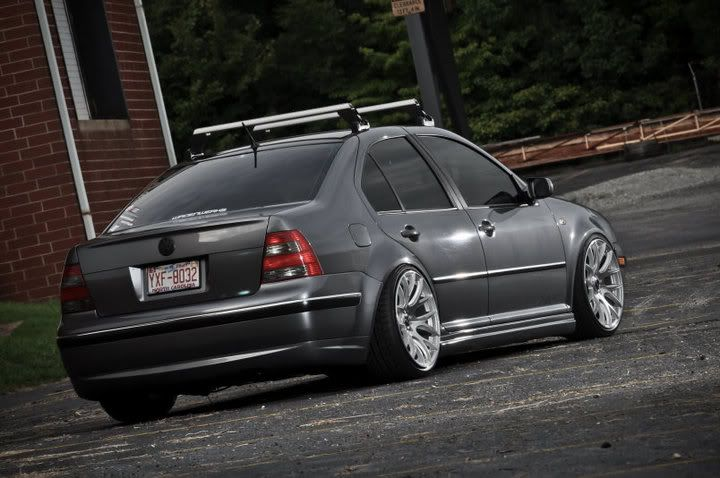
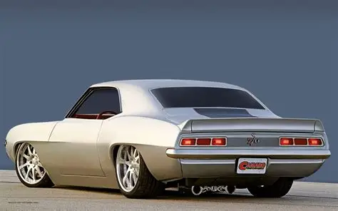

Story of sucess the history behind ultimate performace Ultimate Performance was established in 2010 and is well respected in the Tuning & Automotive Industry as the Market Leader. However Ultimate Performance has been in the industry since 2005. The company was recently rebranded and now has a state of the art 4 wheel dyno facility in the shop.The layout of the shop has also changed, and as such we now have 9 lifts, and a welding and engine building facility on our premises.

We had the opportunity to build a specialised facility that would allow us to be at the forefront of development within the industry and ensuring we have the very latest technology allowing us to offer power runs and ECU mapping on one of the best 4-wheel drive dyno systems on the market.
